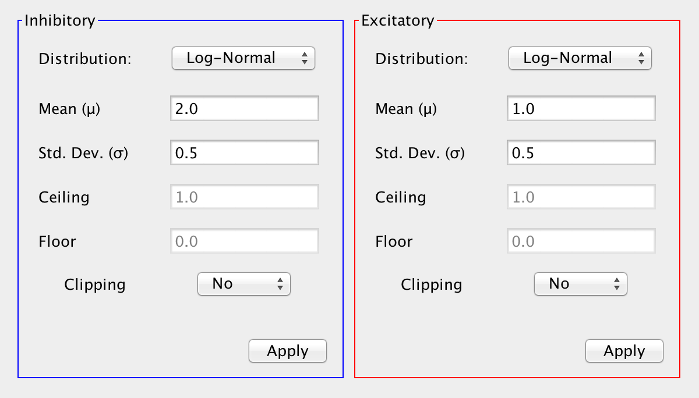
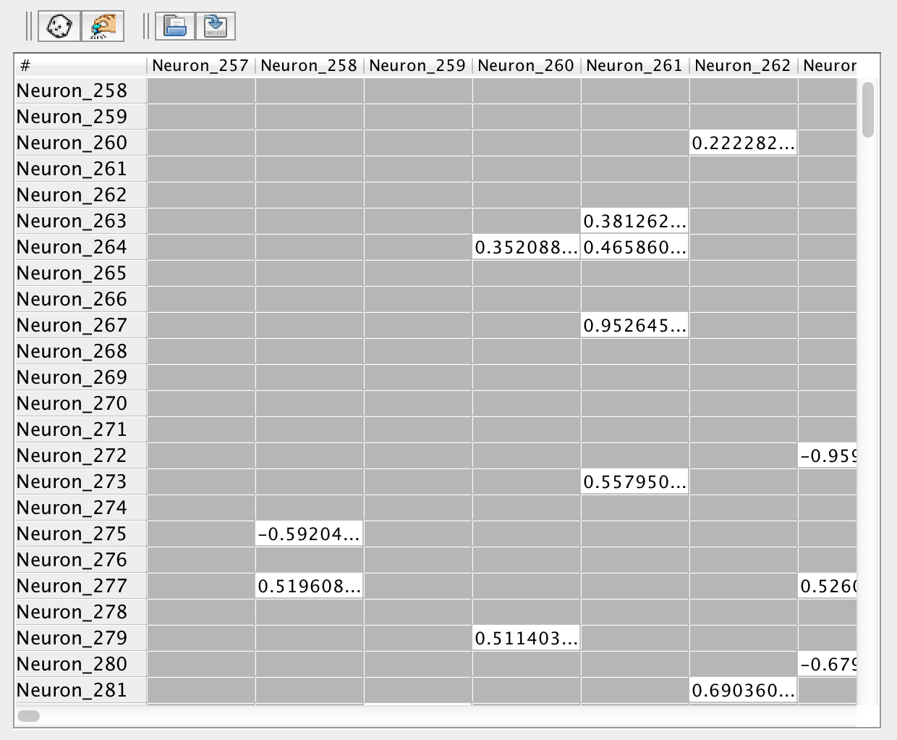

Weight Visualization & Manipulation
Tools for visualizing and adjusting weights can be invoked by selecting an arbitrary set of weights and invoking the synapse adjustment dialog (from the edit menu or using command-R), or in the various tabs of the synapse group dialog, which is invoked by double clicking on a synapse group's interaction box or right-clicking on it and selecting Adjust Synapses from the menu.
This page describes most of the tabs of the synapse group dialog, except for the first properties tab.
Synapse Values Tab

Synapse Statistics
The top part of the adjust synapses tab shows basic statistics about a populations of synapses. Basic numerical statistics, as well a histogram can be made to display weight statistics and values for synapses of both or only one polarity, and optionally can overlay the two for a direct comparison.Which polarities are viewed is set using the combo box:
Both: Values are calculated using both polarities, assigning negative values to inhibitory weights.
Overlay: If "Overlay" is selected, it will display these values for all synapses in the group, using the absolute value of all inhibitory weight values.
Excitatory / Inhibitory: If a single polarity is selected it will display those statistics only for the synapses of that polarity, again using absolute values for inhibitory synaptic weights.
Revalidate
Occasionally outside entities like scripts or trainers will alter synaptic weights in a way which changes their polarity without alerting the synapse group. This is easy to spot as the histogram will show that some "excitatory" synapses have a negative value and/or some "inhibitory" synapses have a positive value. In order to reconcile this, the user is given access to a "Revalidate" button located in this panel. Revalidating a synapse group will cause it to iterate over all the synapses in the group and assign them to the correct set based on their polarity (the sign of their strength/weight).
Excitatory / Inhibitory Ratio
It is also possible to change the ratio of excitatory and inhibitory synapses in the group from here. The ratio can be set in three ways. Setting it one way will updated the other displays.
Main slider bar: Slide to determine percentage of excitatory synapses.
Percent Excitatory / Inhibitory: Text field to set the value more precisely.
Excitatory and Inhibitory Distributions
The probability distributions used to determine the strengths of excitatory and inhibitory synapses can be set at the bottom of the synapse values tab, using randomizer panels.
Excitatory and Inhibitory Synapse Types
In this tab the basic properties of the inhibitory and excitatory synapses can be separately set. The basic dialog is the same as that used for synapses.
Note: Although it is not in the GUI as of 3.0, neurons can also possess a polarity. If that is the case then all efferent synapses from that neuron must be of the same polarity as the neuron. In these cases editing the ratio of excitatory to inhibitory synapses is impossible from this panel.
Weight Matrix Viewer
The weight matrix viewer allows weights connecting two sets of neurons to be viewed in a tabular format. They can be used either for loose neurons or within synapse groups.
One can manipulate the strength of connections through the weight matrix viewer. Clicking on a cell allows one to manipulate the synaptic strength of the connection represented by the cell. Cells can also be selected (e.g. using command-A) or shift-selected, and then groups of them randomized or otherwise altered. Values can also be loaded from a .csv file. Their values can also be saved to a .csv file (see toolbar below)
Loose Neuron Weight Matrix Viewer

To view the synapses connecting two sets of loose neurons set source and target neurons and then select Show Weight Matrix from the insert menu or by right clicking on any of the relevant neurons. Cells in the table correspond to connections between source (red) neurons as rows and target (green) neurons as columns. Values in these cells represent the strengths of connections. Non-existent connections are represented by gray boxes (see the image below).
Synapse Group Weight Matrix Viewer

In this context the matrix represents the weights of a synapse group, which connects a source and target neuron group. Cells in the table correspond to connections between neurons in the source neuron group (rows) and target neuron group (column). Values in these cells represent the strength of connections.
Note: Currently the weight matrix viewer is disabled for synapse groups with more than 10,000 synapses. This is due to the fact that a table of that size would be unnavigable, and of dubious use. At that size individual synapses are much less important. This is also to prevent users from accidentally attempting to view extremely large tables (much greater than 10,000 entries), which can cause the JVM to run out of memory.
Weight Matrix Viewer Toolbar
Randomize: Pressing the Random button will uniformly randomize the strength of all connections represented in the weight matrix viewer between two numbers (default (1,-1))
Preferences: Pressing the Preferences button will allow one to set the upper and lower bounds on the viewer's randomize function.
Open: Pressing the Open button allows one to open a .csv file and set the values of the connections represented by the viewer to the values specified in the file. The .csv being loaded must have the same dimensions as the weight matrix of the synapse group.
Save: Pressing the Save button allows one to save the weight matrix as a .csv file.
Synapse Adjustment Dialog
The top part of this dialog shows synapse statistics about the selected set of synapses. The bottom part contains tabs that can be used to adjust the synapses, by pressing the Apply button. Changes are immediately shown in the top statistics area.

The dialog is invoked in the same way the weight matrix viewer is, by selecting source and target neurons and then using a right-click menu.
Randomizer
Use a randomizer to set the weight strengths.
Perturber
Add random values to weight strengths, using a randomizer.
Pruner
Remove all synapses with a value below the indicated threshold by pressing the button.
Scaler
Scale all synapse values up or down by changing their strengths as much as the indicated percentage.